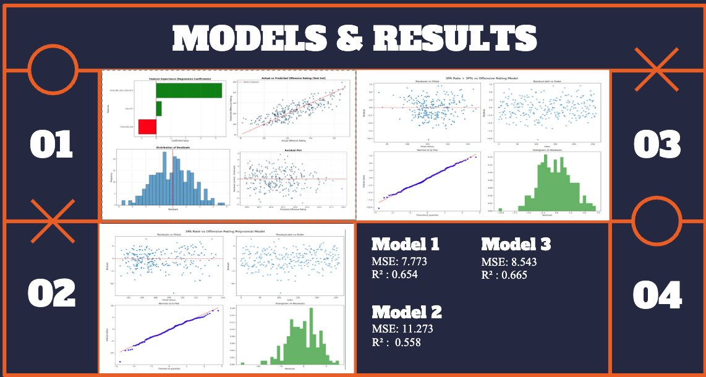
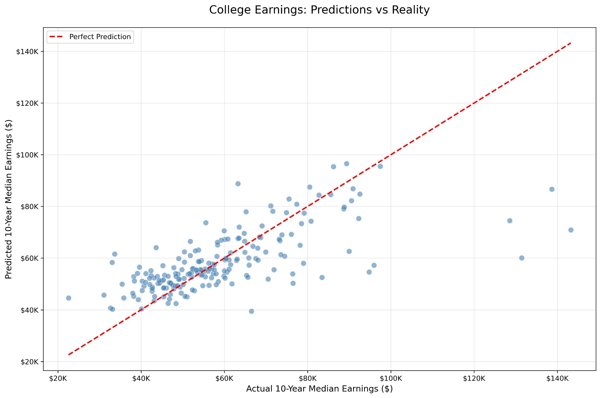
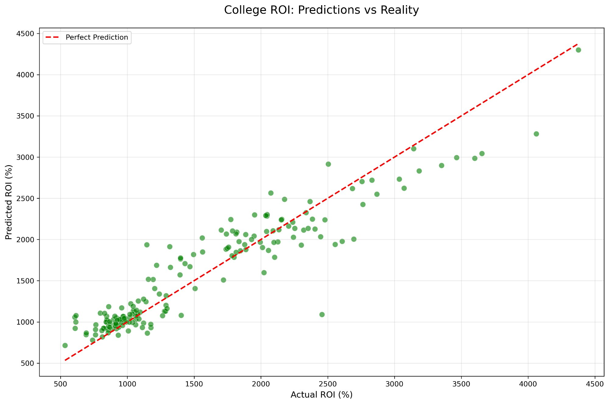

Selected Work
Data Engineering · Machine Learning · Visualization
My project work spans data engineering infrastructure, machine learning, and interactive data visualization. I'm interested in building end-to-end systems — from raw data ingestion and pipeline architecture to predictive models and polished visual outputs. Below is a selection of projects from my coursework, internship, and independent work.
At GFG Holdings, I work on production-grade systems processing hundreds of thousands of records weekly. In my coursework, I've explored everything from NBA shot prediction to cryptocurrency adoption analytics. Each project has pushed me to think carefully about data quality, model interpretability, and how to communicate results clearly.
I work primarily in Python, SQL, and JavaScript, and have built pipelines using n8n, PostgreSQL, and the OpenAI API. I'm always looking to take on problems that sit at the intersection of technical depth and real-world impact.
GFG Holdings · 2025–Present
Designed and built a multi-platform data aggregation system ingesting 1,600+ data points weekly from 14 enterprise hotels. Integrated Google Maps, TripAdvisor, Expedia, and Booking.com APIs into a centralized PostgreSQL database using n8n workflows with custom JavaScript automation.

DS 3000 · Fall 2025
Group project with Joshua Chan, Jonathan Barrientos & Itai Schwarz
A machine learning class project analyzing 45 years of NBA data to investigate the relationship between 3-point shooting and offensive efficiency. Using the NBA API, we built and compared multiple regression models — linear, polynomial, and multi-variable — targeting offensive rating as the outcome variable. The results showed that 3-point efficiency is a stronger predictor than volume, with our best model achieving an R² of 0.654 and MSE of 7.773.


Personal Project · 2025
A personal project building two Random Forest regression models to predict graduate earnings and return on investment across 1,000+ U.S. universities using the Department of Education College Scorecard API. The ROI model performed significantly stronger than the earnings model, achieving an R² of 0.875, with cost-based features far outweighing prestige metrics as predictors. Also my first time building a front end to present results.
Journal of Student Research · Published Nov 2023
Co-authored with Prof. Samuel Montañez, Universidad Panamericana
Peer-reviewed research examining how financial engineering can accelerate the global transition to sustainable energy. Analyzed the $2+ trillion green bond market across 65+ countries, with a comparative case study of Mexico's energy policy shifts from 2011 to 2023, demonstrating a strong correlation between market liberalization and green bond issuance growth.
Open to co-op, internship, and project opportunities. Always happy to connect.